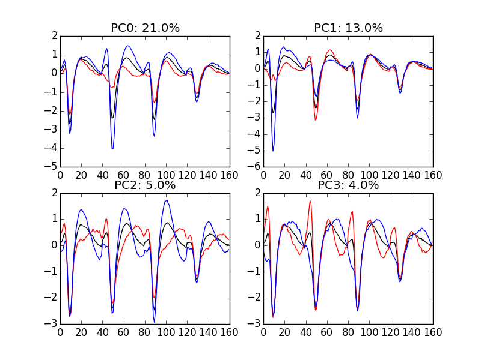
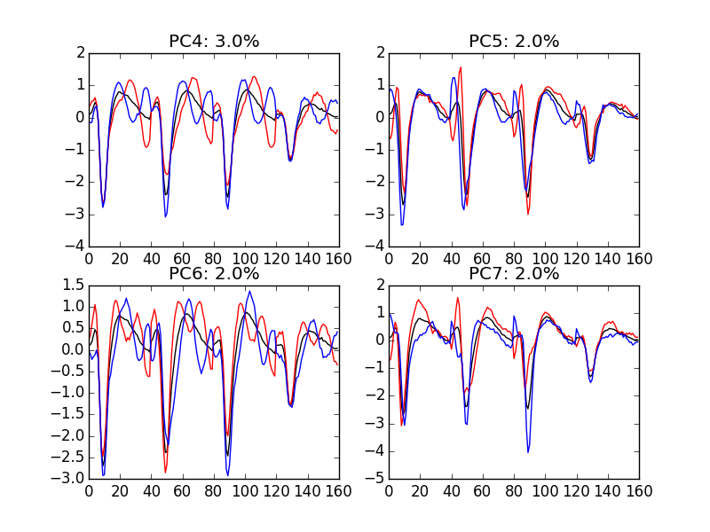

Sorting a Big Data Set With Python
Table of Contents
1 Model / Catalog Estimation
1.1 Dimension reduction
1.1.1 Principal Component Analysis (PCA)
Our events are living right now in an 180 dimensional space (our cuts are 45 sampling points long and we are working with 4 recording sites simultaneously). It turns out that it hard for most humans to perceive structures in such spaces. It also hard, not to say impossible with a realistic sample size, to estimate probability densities (which is what model based clustering algorithms are actually doing) in such spaces, unless one is ready to make strong assumptions about these densities. It is therefore usually a good practice to try to reduce the dimension of the sample space used to represent the data. We are going to that with principal component analysis (PCA), using it on our "good" events.
from numpy.linalg import svd varcovmat = np.cov(evts.T) u, s, v = svd(varcovmat)
With this "back to the roots" approach, u should be an orthonormal matrix whose column are made of the principal components (and v should be the transpose of u since our matrix varcovmat is symmetric and real by construction). s is a vector containing the amount of sample variance explained by each principal component.
1.1.2 Exploring PCA results
PCA is a rather abstract procedure to most of its users, at least when they start using it. But one way to grasp what it does is to plot the mean event plus or minus, say five times, each principal components like:
evt_idx = range(180)
evts_good_mean = np.mean(evts,0)
for i in range(4):
plt.subplot(2,2,i+1)
plt.plot(evt_idx,evts_good_mean, 'black',evt_idx,
evts_good_mean + 5 * u[:,i],
'red',evt_idx,evts_good_mean - 5 * u[:,i], 'blue')
plt.title('PC' + str(i) + ': ' + str(round(s[i]/sum(s)*100)) +'%')

Figure 1: PCA of evts exploration (PC 1 to 4). Each of the 4 graphs shows the mean waveform (black), the mean waveform + 5 x PC (red), the mean - 5 x PC (blue) for each of the first 4 PCs. The fraction of the total variance "explained" by the component appears in the title of each graph.
We now look at the next 4 principal components:
for i in range(4,8):
plt.subplot(2,2,i-3)
plt.plot(evt_idx,evts_good_mean, 'black',
evt_idx,evts_good_mean + 5 * u[:,i], 'red',
evt_idx,evts_good_mean - 5 * u[:,i], 'blue')
plt.title('PC' + str(i) + ': ' + str(round(s[i]/sum(s)*100)) +'%')

Figure 2: PCA of evts exploration (PC 4 to 7). Each of the 4 graphs shows the mean waveform (black), the mean waveform + 5 x PC (red), the mean - 5 x PC (blue). The fraction of the total variance "explained" by the component appears in between parenthesis in the title of each graph.
1.1.3 Static representation of the projected data
We can build a scatter plot matrix showing the projections of our "good" events sample onto the plane defined by pairs of the few first PCs:
evts_good_P0_to_P3 = np.dot(evts,u[:,0:4])
from pandas.tools.plotting import scatter_matrix
import pandas as pd
df = pd.DataFrame(evts_good_P0_to_P3)
scatter_matrix(df,alpha=0.2,s=4,c='k',figsize=(6,6),
diagonal='kde',marker=".")

1.1.4 Dynamic visualization of the data with GGobi
The best way to discern structures in "high dimensional" data is to dynamically visualize them. To this end, the tool of choice is GGobi, an open source software available on Linux, Windows and MacOS. We start by exporting our data in csv format to our disk:
import csv
f = open('evts.csv','w')
w = csv.writer(f)
w.writerows(np.dot(evts,u[:,:6]))
f.close()
The following terse procedure should allow the reader to get going with GGobi:
- Launch
GGobi - In menu:
File->Open, selectevtsE.csv. - Since the glyphs are rather large, start by changing them for smaller ones:
- Go to menu:
Interaction->Brush. - On the Brush panel which appeared check the
Persistentbox. - Click on
Choose color & glyph.... - On the chooser which pops out, click on the small dot on the upper left of the left panel.
- Go back to the window with the data points.
- Right click on the lower right corner of the rectangle which appeared on the figure after you selected
Brush. - Dragg the rectangle corner in order to cover the whole set of points.
- Go back to the
Interactionmenu and select the first row to go back where you were at the start.
- Go to menu:
- Select menu:
View->Rotation. - Adjust the speed of the rotation in order to see things properly.
We easily discern 7 rather well separated clusters. Meaning that an automatic clustering with 10 clusters on the first 3 principal components should do the job.
1.2 Clustering with K-Means
Since our dynamic visualization shows 7 well separated clusters in 3 dimension, a simple k-means should do the job. We are using here the KMeans class of scikit-learn:
from sklearn.cluster import KMeans km7 = KMeans(n_clusters=7, init='k-means++', n_init=100, max_iter=100) km7.fit(np.dot(evts,u[:,0:3])) c7 = km7.fit_predict(np.dot(evts,u[:,0:3]))
In order to facilitate comparison when models with different numbers of clusters or when different models are used, clusters are sorted by "size". The size is defined here as the sum of the absolute value of the median of the cluster (an L1 norm):
cluster_median = list([(i,
np.apply_along_axis(np.median,0,
evts[c7 == i,:]))
for i in range(7)
if sum(c7 == i) > 0])
cluster_size = list([np.sum(np.abs(x[1])) for x in cluster_median])
new_order = list(reversed(np.argsort(cluster_size)))
new_order_reverse = sorted(range(len(new_order)), key=new_order.__getitem__)
c7b = [new_order_reverse[i] for i in c7]
1.2.1 Results inspection with GGobi
We start by checking our clustering quality with GGobi. To this end we export the data and the labels of each event:
f = open('evts_sorted.csv','w')
w = csv.writer(f)
w.writerows(np.concatenate((np.dot(evts,u[:,:6]),
np.array([c7b]).T),
axis=1))
f.close()
An again succinct description of how to do the dynamical visual check is:
- Load the new data into GGobi like before.
- In menu:
Display->New Scatterplot Display, selectevtsEsorted.csv. - Change the glyphs like before.
- In menu:
Tools->Color Schemes, select a scheme with 10 colors, likeSpectral,Spectral 10. - In menu:
Tools->Automatic Brushing, selectevtsEsorted.csvtab and, within this tab, select variablec10b. Then click onApply. - Select
View->Rotationlike before and see your result.